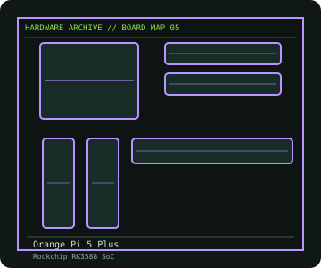

[ INDIVIDUAL COMPONENT // MOTHERBOARDS ]
Orange Pi 5 Plus
RK3588 SBC with up to 32 GB board-specific RAM, dual 2.5GbE, dual HDMI output and M.2 NVMe expansion. This entry identifies one product model; revision and firmware qualifications are stated below.

IDENTIFICATION: Check the PCB silkscreen, printed revision, assembly code, and firmware identifier on the actual board. Similar model names and PCB revisions may use different specifications or firmware.
Specifications
| Catalog subcategory | Integrated and compact boards |
|---|---|
| Exact board / model | Orange Pi 5 Plus |
| Era / platform | Rockchip RK3588 single-board computer, 2023 |
| CPU and socket | Rockchip RK3588: four Arm Cortex-A76 cores up to 2.4 GHz plus four Cortex-A55 cores up to 1.8 GHz; integrated Mali-G610 MP4 GPU and NPU |
| Chipset / controller | Rockchip RK3588 SoC |
| Memory | 4 GB, 8 GB, 16 GB or 32 GB onboard-memory variants; capacity is selected at purchase and is not a standard DIMM upgrade |
| Expansion and connectivity | Two HDMI 2.1 outputs and one HDMI input; USB-C DisplayPort output, two 2.5-Gigabit Ethernet ports, two USB 3.0 and two USB 2.0, microSD, eMMC socket, 40-pin header, M.2 M-key PCIe 3.0 x4 for 2280 NVMe and M.2 E-key PCIe 2.0 x1 for 2230 wireless modules |
| Firmware | Bootloader, device tree and OS images are board-specific. Follow Orange Pi's Orange Pi 5 Plus documentation and distinguish the Plus from Orange Pi 5 and Orange Pi 5B images. |
Compatibility and revision notes
The M.2 socket and eMMC socket serve different storage modules; confirm keying, dimensions and documented lane/interface support. Check the exact RAM SKU, power input and enclosure/cooling arrangement before choosing an image or accessories.
Physical socket fit alone does not establish compatibility. Verify the exact processor support list, minimum BIOS, memory population rules, case dimensions, power connectors and shared-lane behavior in the cited model documentation before installation.
Preservation and repair
Use ESD precautions around the exposed high-speed connectors, inspect the M.2 standoff and eMMC socket latch, and check heatsink contact on the RK3588 before sustained load testing. Preserve the bootloader/device-tree version and the exact memory SKU in collection notes.
For an archive record, photograph the PCB and labels before cleaning; note serial/date codes, BIOS/BMC versions, accessories, known faults, repairs, and test conditions. Use ESD-safe handling and never apply power with loose conductive hardware beneath the board.
Sources & further reading
- Orange Pi — Orange Pi 5 Plus official wikiManufacturer wiki with model-specific CPU, RAM options, ports, storage, dimensions and software guidance.
Manufacturer model documentation is the primary reference; confirm the document revision and board markings when specifications vary by revision or SKU.